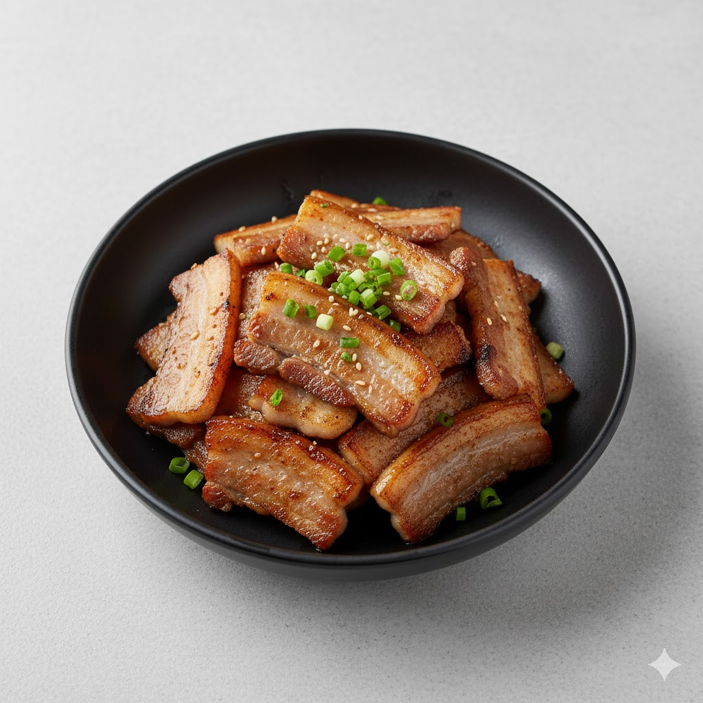

Samgyeopsal
Thick slices of pork belly, grilled until crispy, usually served with ssamjang and wrapped in fresh greens.
Ingredients
- 200–300g pork belly
- Salt
- Pepper
- Ssamjang (for serving)
- Lettuce or perilla leaves (for wrapping)
Instructions
- Heat a grill pan on medium-high heat.
- Place pork belly slices and cook until browned and crispy.
- Season lightly with salt and pepper.
- Serve with lettuce and ssamjang.